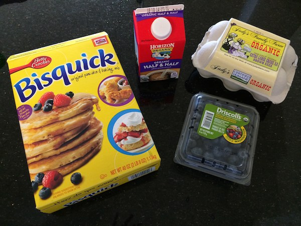
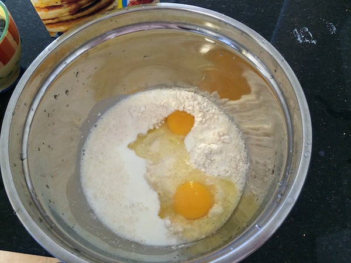
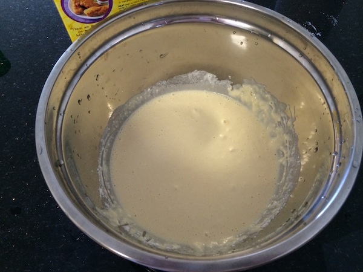
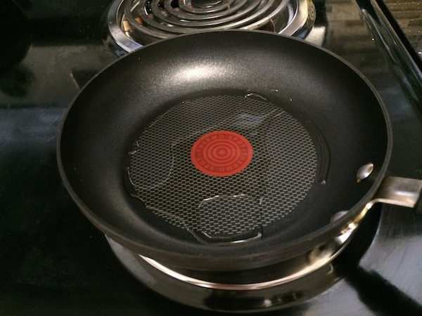
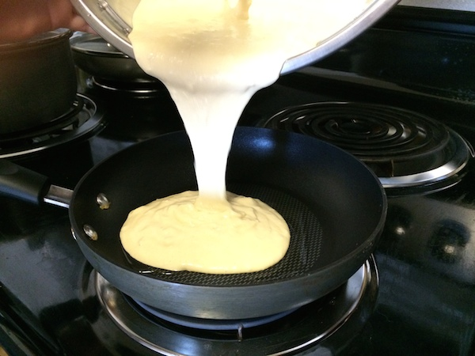
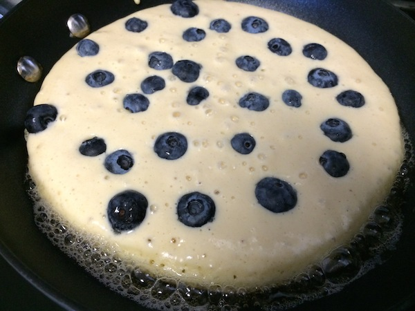
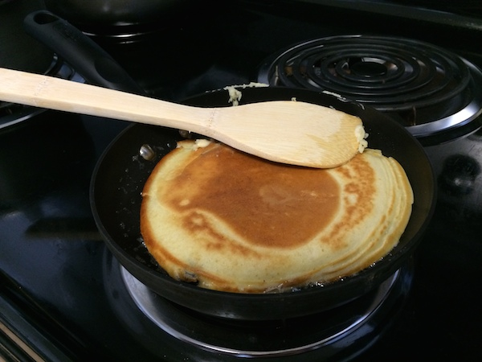
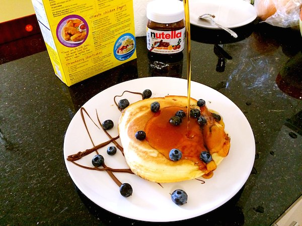
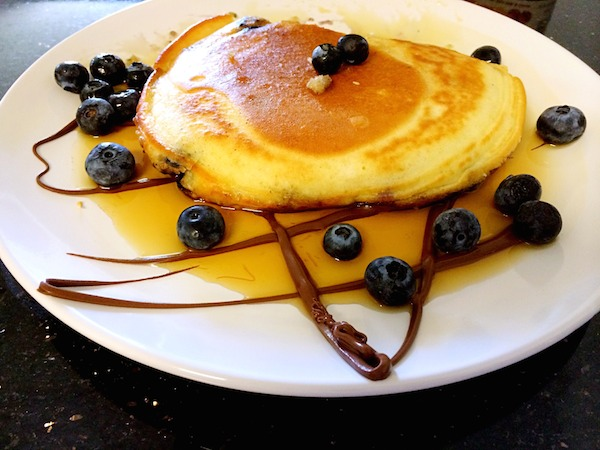
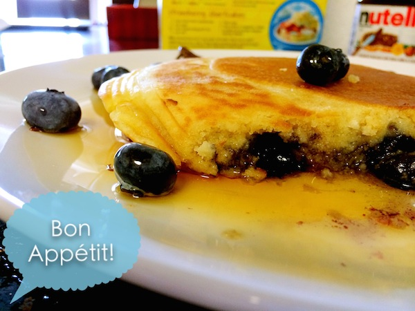

In a large mixing bowl, stir in pancake mix, half and half, and eggs.

Beat the eggs and blend the dry and the wet ingredients into a lumpy batter.

Heat some olive oil in a 6 inch fry pan over medium heat.

Pour 1/2 cup of batter into the fry pan.

Sprinkle the top with some of the blueberries and cook 2-3 minutes.

Flip and cook another 2-3 minutes until golden on both sides.

Decorate the serving plate and serve with warm maple syrup.

